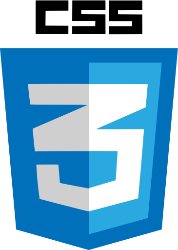

..:: CSS 3 ::..
Estimado estudiante, en esta sección encontrará información sobre las diversas características y novedades de CSS3. Bienvenidos….
Mientras que HTML nos permite definir la estructura de una página web, las hojas de estilo en cascada (Cascading Style Sheets o CSS) son las que nos ofrecen la posibilidad de definir las reglas y estilos de representación en diferentes dispositivos, ya sean pantallas de equipos de escritorio, portátiles, móviles, impresoras u otros dispositivos capaces de mostrar contenidos web. Las hojas de estilo nos permiten definir de manera eficiente la representación de nuestras páginas y es uno de los conocimientos fundamentales que todo diseñador web debe manejar a la perfección para realizar su trabajo.

Este enlace contiene una Guía Completa de CSS 3 (la última version de Cascade Style Sheet). El documento PDF contiene temas como: selectores, elementos de CSS3, efectos de texto y tipografías, color, efectos de borde, efectos de sombra y brillo, efectos 3D, transformaciones, transiciones, animaciones, entre otros.
>>>>> Clic sobre el logo de CSS3 para descargar <<<<<
En cada uno de los siguientes enlaces encontrara videos con temas relacionados con el funcionamiento de CSS3.
...::: Introducción a CSS3
...::: Cómo insertar CSS
...::: Selectores en CSS
...::: HTML5: HEADER, NAV, UL, LI con CSS3
...::: HTML5: SECTION, ASIDE, FOOTER CON CSS3
...::: Menú Desplegable con HTML5 y CSS3